首頁 >
Telegram 貼圖的製作方法
步驟：
1.使用繪圖軟體 Krita 繪製貼圖
2.上傳貼圖到 Telegram 網站
步驟一：使用繪圖軟體 Krita 繪製貼圖
官方的貼圖樣本：StickerExample.psd
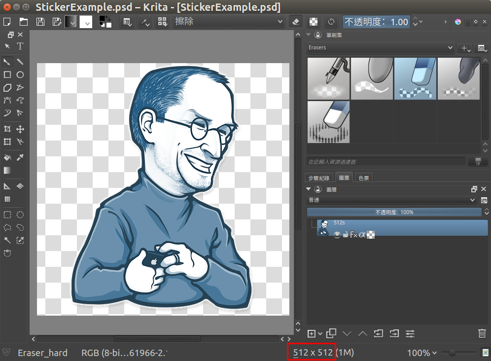
Krita 程式下載：https://krita.org/download/krita-desktop/
Krita 中文社群：https://www.facebook.com/groups/KritaTW/ （有使用問題，可加入這個社群！）
Krita 不僅可以用來設計 Telegram 貼圖，也可以設計 LINE 貼圖。兩種貼圖的差別在於，Telegram 貼圖少了審核（但必要時，因為是公開的內容，官方可將之下架），而 LINE 貼圖要上架，則要經過較嚴格的審核標準（畢竟是商品貼圖）。
所以 Telegram 貼圖設計適合的對象為：貼圖設計玩家、數位繪圖或貼圖設計的學習者、不用煩惱五斗米的藝術家。而 LINE 貼圖設計適合的對象，則為專業的美工設計人員。
以下是 LINE 貼圖的設計方法及規範，很值得參考：
根據上面的介紹，製作了一個樣本檔案（sample.kra），您可以下載它，然後直接使用它，來畫貼圖 ：（個人使用 Krita 心得紀錄）
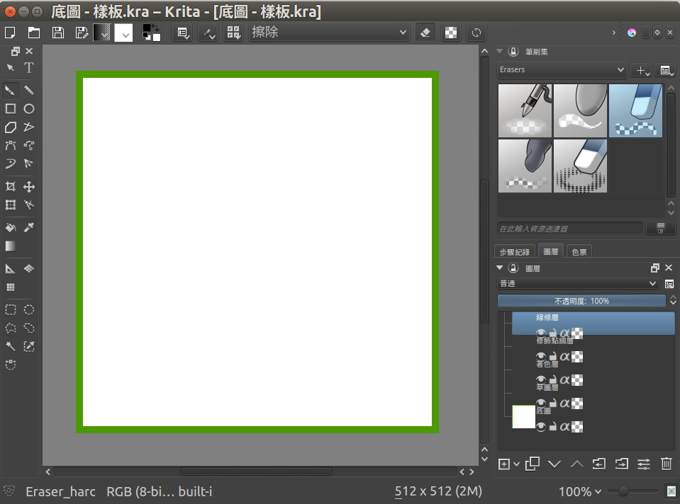
底圖：中間白色部份為其他圖層可繪畫的區域。綠色邊框為保留區域，避免畫到太過邊緣。(邊框為10～15mm，我想應該都合理吧？！)
草圖層：繪製草圖的圖層
線條層：根據草圖，繪製正式的線條
著色層：要在線條層之下，據說這樣上色時就不會把線條層的線條蓋掉了。
修飾點綴層：應該是在線條層和著色層之間，做更細部的修飾。
完成後，可以將底圖隱藏起來（背景變成透明的！），就可以呈現出效果了：
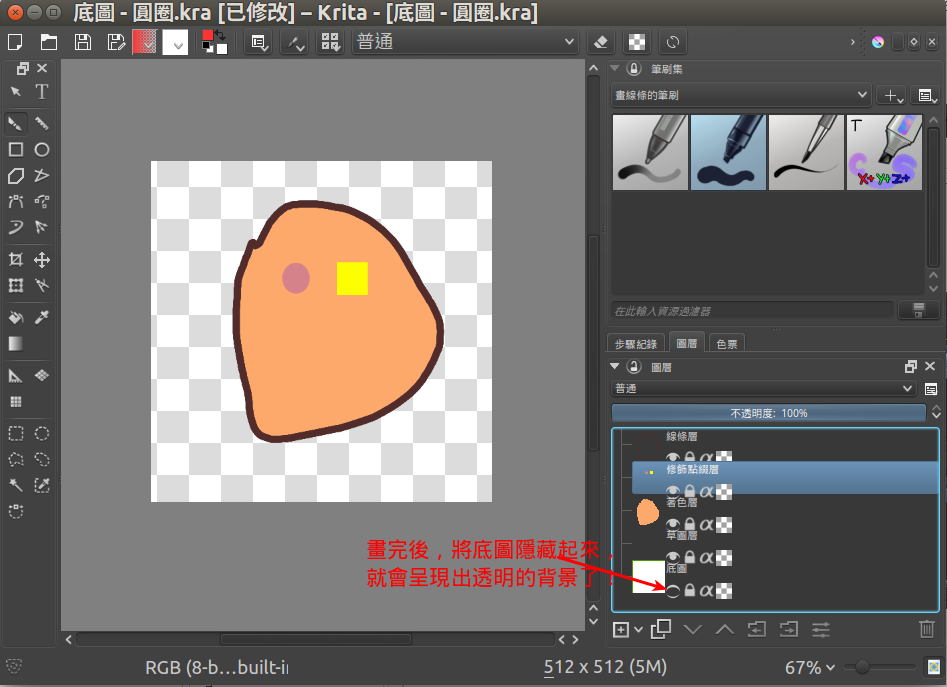
最後，將檔案匯出為 png 檔，就可以上傳了！
如果你沒有要公開給他人使用，則需要以下步驟：
- 在 Krita 中，將檔案匯出為 webp 檔
- 使用時，以「檔案」的形式傳到聊天室，而不是以「圖片」的形式。
步驟二：上傳貼圖到 Telegram 伺服器
建議用網頁版或桌面版 Telegram 上傳貼圖！
在 Telegram 中，搜尋 " Stickers "，就可以找到貼圖機器人 "@Stickers"。
以下是和貼圖機器人的對話：
進入後的畫面：

然後按「start」（開始）：
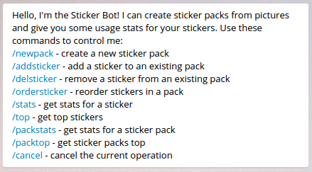
輸入「/newpack」（或直接按 "/newpack" 連結）
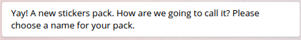
輸入您的貼圖集名稱 ...
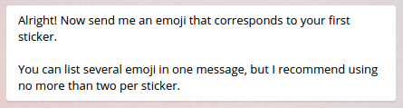
輸入對應您第一個貼圖的表情符號（emoji）
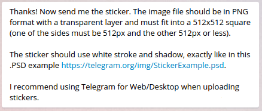
現在傳送一張您的貼圖檔案（png檔）（512x512，或 512x較小的數字 ，或較小的數字x512）
注意，是以檔案形式上傳，而非照片形式。
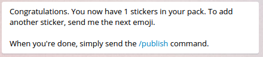
按照前面的方法，再傳下一個相應的表情符號，及貼圖。
完成所有貼圖傳送後，執行發布指令：/publish
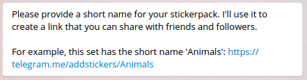
為您的貼圖連結，取個名稱。例如「Animals」，則產生的連結為：
https://telegram.me/addstickers/Animals
我取了一個名稱：EggMan
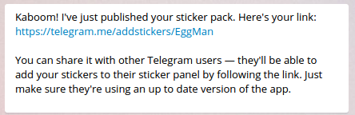
產生了一個貼圖連結：（裡面有 4 個我亂畫的測試貼圖）
執行完上述動作，馬上就可以使用及分享貼圖。
https://telegram.me/addstickers/EggMan
要加新貼圖至原本的貼圖集(Egg)中，請在與機器人的對話中，執行指令：（點擊對話中的指令也可以！）
/addsticker
請選擇一個對應貼圖的表情符號：
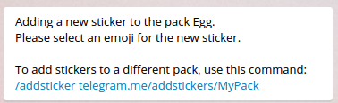
要將貼圖加入別的貼圖集中（非目前對話中的），要在指令後，輸入完整名稱。
注意：請不要上傳屬於他人知識財產權的圖片檔：
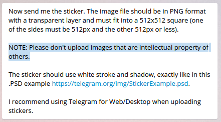
完成！
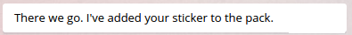
注意，您添加新的貼圖後，如果沒看到新貼圖，手機請重開機，然後到 Telegram 的「設定」>「貼圖」中，去點擊該貼圖集，您就會看到新貼圖了！
桌面版，則是重新開啟程式即可！